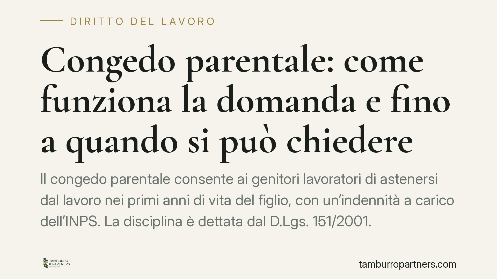

Congedo parentale: come funziona la domanda e fino a quando si può chiedere
Il congedo parentale consente ai genitori lavoratori di astenersi dal lavoro nei primi anni di vita del figlio, con un'indennità a carico dell'INPS. La disciplina è dettata dal D.Lgs. 151/2001. Chiariamo chi può chiederlo, entro quale età del figlio, per quanti mesi e come si presenta la domanda, distinguendo il profilo della durata da quello dell'indennizzo.

Che cos'è il congedo parentale
Il congedo parentale è il diritto dei genitori lavoratori di assentarsi dal lavoro per prendersi cura del figlio nei suoi primi anni di vita. È distinto dal congedo di maternità e di paternità obbligatori: interviene dopo, ha natura facoltativa e può essere frazionato.
La fonte principale è l'art. 32 del D.Lgs. 26 marzo 2001, n. 151 (Testo unico maternità e paternità). La norma individua i soggetti legittimati, la durata massima e il limite di età del figlio entro cui il diritto può essere esercitato.
Chi può chiederlo ed entro quale età del figlio
Hanno diritto al congedo entrambi i genitori, in modo autonomo tra loro. Nella disciplina vigente dell'art. 32 il congedo può essere fruito entro i 12 anni di età del figlio (elevati in caso di adozione o affidamento secondo le regole specifiche del Testo unico).
È importante una precisazione. Circolano periodicamente notizie su interventi delle leggi di Bilancio che modificano età, durata o percentuali di indennità del congedo. Prima di fare affidamento su un'estensione dei limiti (ad esempio a un'età superiore ai 12 anni), è opportuno verificare il testo pubblicato in Gazzetta Ufficiale e le istruzioni operative dell'INPS: le regole applicabili sono quelle effettivamente in vigore al momento della domanda, non quelle annunciate.
Quanto dura: il monte complessivo non cambia
Qui va tenuta ferma una distinzione decisiva: una cosa è fino a quando si può chiedere (limite di età del figlio), un'altra è quanto congedo spetta (monte massimo di mesi).
Nel quadro dell'art. 32, il limite complessivo tra i due genitori è pari, in via generale, a dieci mesi, elevabili a undici quando il padre fruisce di un periodo minimo continuativo. Entro questo tetto, ciascun genitore ha un proprio limite individuale. Un eventuale spostamento del limite di età non aumenta il numero di mesi disponibili: consente solo di distribuirli su un arco temporale più ampio.
L'indennità: percentuali e mensilità
Il congedo parentale è in parte indennizzato dall'INPS. Le leggi di Bilancio degli ultimi anni sono intervenute più volte per elevare all'80% della retribuzione l'indennità di alcune mensilità, in aggiunta al trattamento ordinario al 30% previsto in via generale.
Poiché il numero di mensilità indennizzate all'80% e le condizioni di accesso sono state modificate a più riprese, è opportuno verificare, caso per caso, la percentuale e il numero di mesi effettivamente riconosciuti in base alla normativa vigente alla data di inizio del congedo e alle istruzioni INPS aggiornate. I mesi eccedenti quelli indennizzati sono coperti al 30% entro i limiti di reddito, e non indennizzati oltre.
Come si presenta la domanda
La domanda si presenta all'INPS in via telematica, prima dell'inizio del periodo di congedo. Il datore di lavoro va informato con il preavviso previsto dalla contrattazione applicabile (di regola almeno cinque giorni, ridotti nei casi urgenti). Il congedo può essere richiesto in modalità continuativa, frazionata a mesi, a giorni o, ove ammesso, a ore.
Implicazioni per il lavoratore
La scelta del periodo incide direttamente sull'indennità: fruire prima le mensilità indennizzate all'80% ha un impatto economico diverso rispetto a rinviarle. Il diritto è personale e non trasferibile all'altro genitore oltre i limiti individuali fissati dalla legge.
Implicazioni per il datore di lavoro
Il datore deve gestire l'assenza e anticipare l'indennità in busta paga, salvo conguaglio con l'INPS secondo le regole di gestione. Va garantita la conservazione del posto e il rientro nelle mansioni. La frazionabilità richiede un'organizzazione attenta dei turni e della copertura delle attività.
Cosa fare in concreto
- Verificare la normativa in vigore alla data prevista di inizio del congedo, controllando testo di legge e istruzioni INPS aggiornate, senza affidarsi ad annunci non ancora efficaci.
- Calcolare il monte mesi individuale e complessivo residuo, tenendo conto dei periodi già fruiti dall'altro genitore.
- Pianificare la collocazione delle mensilità in base alle percentuali di indennità applicabili, dando priorità a quelle più favorevoli.
- Presentare la domanda telematica all'INPS prima dell'inizio del periodo e rispettare il preavviso verso il datore di lavoro.
- Conservare ricevute e comunicazioni, per gestire eventuali contestazioni su indennità o conservazione del posto.
Disclaimer
Contributo informativo a cura di Tamburro & Partners - Avv. Giuseppe Tamburro. Non costituisce parere legale.
Ogni storia di lavoro ha i suoi tempi.
Se gestisci HR e vuoi un confronto su contenzioso, ispezioni o licenziamenti, scrivi allo studio. Ti rispondiamo entro un giorno lavorativo.